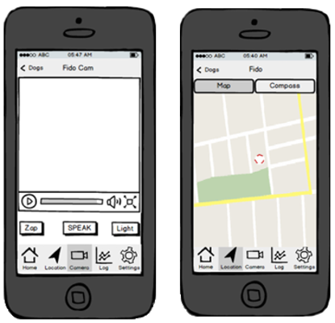
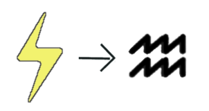
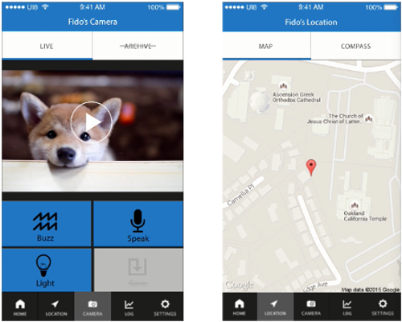
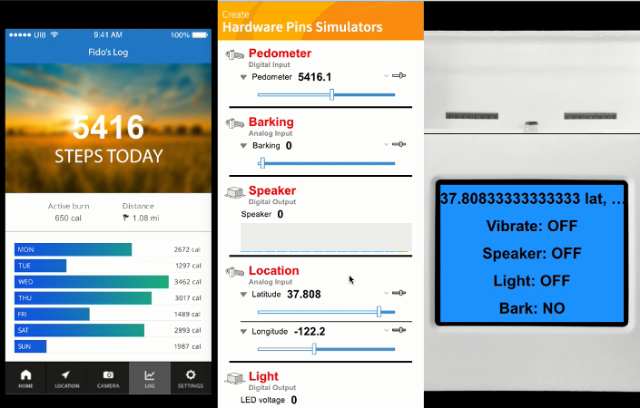
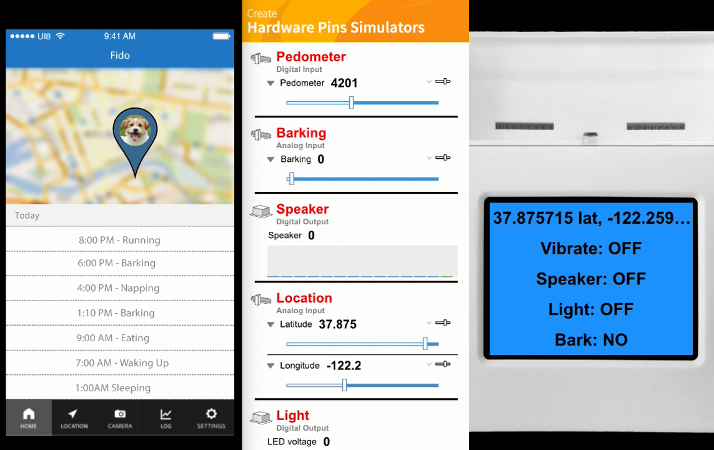

'Edge' : Smart Collar & Companion App
Edge is a mobile app that aggregates data on a dog's activities via prototyped hardware sensors, and then relays the metrics to the user's phone for notifications and human-dog interaction. Users can track their dog's location, physical activity, and barking levels, with app features including a camera feed, microphone and buzzer to allow remote contact with one's pet.
-
I helped create Edge as part of a 5-person team of Berkeley students in a User Interface Design course themed on "Internet of Things" device/app pairings, offered by the Berkeley CS department. Our team worked through the standard "Design-Prototype-Evaluate" iteration cycle to go from ideation, to low-fidelity mockups, to a functional JavaScript application.
Tools
Balsamiq |
JavaScript |
Kinoma |
Google |
User Research
We used our persona set to establish target demographics:
- Working, tech-literate adults who leave their dogs (medium/large breed) home alone during the day
- Dog owners who want to track and alter their dog's behavior in physical activity or noise levels
- Outdoors-oriented dog owners who take their pet hiking / camping
With these demographics I conducted contextual inquiries with Berkeley's dog owners to assess their experiences with having dogs. This revealed some key insights into the 21st century dog owner:
- Dog owners exhibit high empathy, and thus desire to remotely check their dog's activity and well-being (many users mentioned dogs' loneliness and anxiety)
- Owners enjoy spending money on their pets (empirically evident too!)
- There are currently few ways to monitor pet behavior remotely.
Using these findings, our team focused on designing an app emphasizing owner-to-pet connection and real-time interaction between the two.
Prototyping & User Testing
Balsamiq mockups allowed for quick iterations and user testing on app design. By asking users to carry out designated tasks we could focus on (and eliminate) any stutters in workflow. For example, our initial designs used a standard hamburger menu to switch between app features, but this obscured navigation scheme caused noticeable delays in task performance; opting for a footer-style toggle bar (seen below) proved resoundingly faster for user interaction.
User testing also revealed a strong dichotomy in how users perceived the shock collar feature. Initially designed as a "Shock" button on the camera page, users either loved or detested the idea of remotely administering small, non-injurious pulses to their dog for discipline. To compromise, we altered our icons from an overt implication ("Shock" with bolt imagery) to a gentler suggestion ("Buzz" with abstract waves).
Same function, different perceptions.
The final Balsamiq iterations transitioned to a high-fidelity JavaScript application written with Kinoma, an IDE and hardware simulator for designing mobile apps and connected devices.


-
(Left to Right) Kinoma's phone emulator, Kinoma Create's hardware pin simulators, and the registered output on a physical Kinoma Create device. The app programatically reads changes in pin values to update the interface, seen here with a daily step counter reading from the "Pedometer" value. Updates can be synced to callback functions integrating APIs, like Google Maps, to dynamically generate a map for the dog's location.
-
The final application includes sensors for features including bark alerts, a pedometer, GPS/Compass-based dog location, and push-to-talk voice messaging. These pins can be re-assigned to actual LEDs, microphones, etc. for a functional product.
{Back}